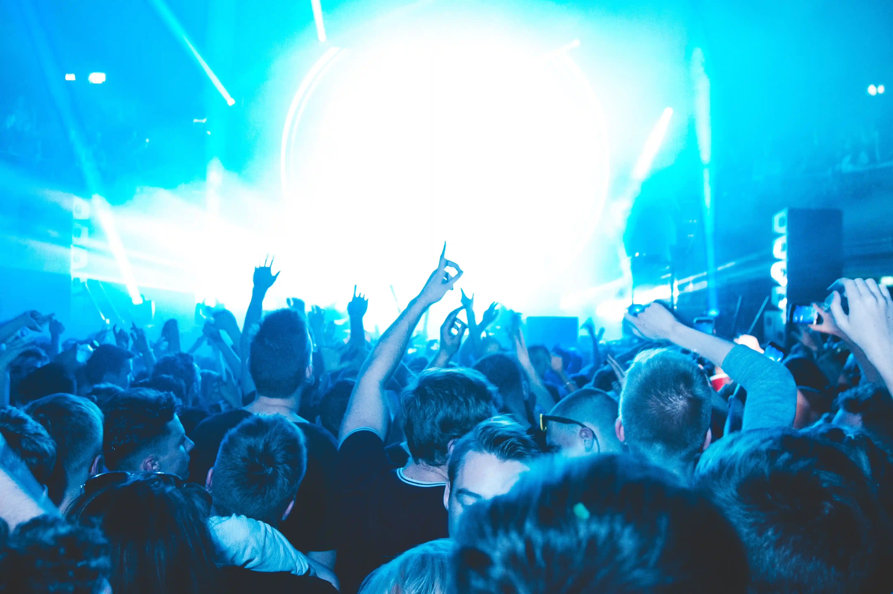
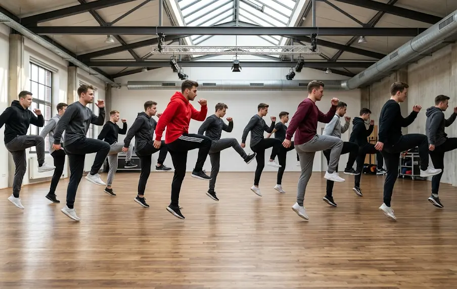

Jumpstyle'i ajalugu ja olemus
Mis on Jumpstyle?
Jumpstyle on ülimalt energiline elektroonilise tantsumuusika saatel esitatav tantsustiil, mis koosneb rütmilistest hüpetest, jalgade ette ja taha löömisest ning kiiretest pööretest. Erinevalt paljudest teistest stiilidest tantsitakse seda täielikult "õhus" – tantsija on pidevas liikumises, hoides keharaskust ühe jala peal ja sooritades teise jalaga spetsiifilisi lööke (kick'e) täpselt rütmi taktis. See on intensiivne ja füüsiliselt nõudlik eneseväljendusviis, mis treenib koordinatsiooni.


Juured ja tekkimine
Jumpstyle sai alguse 1990ndate lõpus Belgias, kust see levis kiiresti naaberriiki Hollandisse. Tants sündis elektrooniliste pidude põrandatel ja kasvas tihedalt välja just gabber- ja hardcore techno kultuurist, pakkudes noortele täiesti uut ja rütmikat eneseväljendusviisi.
YouTube'i ajastu ja ülemaailmne levik
2000ndate teises pooles levis Jumpstyle plahvatuslikult tänu YouTube'i platvormi algusaegadele. Noored üle kogu maailma filmisid end tänavatel, parkides ja tagahoovides tantsimas ning laadisid videod üles. Täpselt samamoodi, puhtalt interneti ja videote kaudu, jõudis see kultuur ja tants omal ajal ka Eestisse.
Tantsustiilid
Muusika ja selle evolutsioon
Jumpstyle sai alguse gabberist ja hardcore technost, mis tegid selle kõla kiireks ja raskeks. 2000ndate alguses tulid juurde hardstyle'i mõjutused, mis tõid muusikasse rohkem meloodiaid. Viimasel ajal on jumpstyle aga uuesti väga populaarseks muutunud ja tekkinud on täiesti uus suund. See uus muusika on vanast üsna erinev – kõige suurem vahe on selles, et uue jumpstyle'i bassilöögid ehk kickid on palju rohkem moonutatud (distorted) ja hoopis teistsuguse heliga. Mõned artistide näited on näiteks ilyhiryu ja romanceplanet, kes on viinud selle stiili tänapäeva veebikultuuri ja sotsiaalmeediasse.
Vanakooli näited
Jeckyll & Hyde - Freefall
Patrick Jumpen - Holiday
Vorwerk - Vietnam
Uue ajastu näited
ROMANCEPLANET - FALL FROM THE SKY PT.2
ilyhiryu - 0_0
home4circus - BLUE SKIES
Tempo
Tavaliselt 140–150 BPM
Iseloom
See tempo annab muusikale iseloomuliku energia ning hüpleva, põrkuva tunnetuse.
Dünaamiline rütm
Muusikavalik on tohutult lai ja ühest loost teise minek võib tähendada täiesti erinevat rütmi ja tempot.
Treening ja mõju tervisele
Jumpstyle'iga alustamiseks ei ole palju vaja. Piisab tavalistest tossudest ja väikesest tasasest pinnast. Asfalt on tantsimiseks parim, aga hädapärast saab hakkama ka muru peal.
Minu igapäevased väljakutsed ja motivatsioon
Praegu tantsin peamiselt muruplatsil keset põldu,正式 privaatset asfaltkohta on keeruline leida. Ausalt öeldes on avalikult tantsimine mulle päris suur väljakutse. Eestis tundub alati, et keegi vaatab ja hindab.
Aga just sellepärast tahaksingi seda rohkem teha – Jumpstyle on midagi, mida ei peaks häbenema! Kui sina tunned samamoodi, siis tea, et sa ei ole ainus. Alustasin ise tavaliste vabaaja tossude ja tressidega, kuid tulevikus tahan kindlasti ka ägedama stiiliga riided hankida.
Kokkuvõtteks: Jumpstyle on suurepärane viis end väljendada ja energiat välja elada. Tantsimine aitab pea tühjaks saada ja lihtsalt hetke nautida!
Kui sa ei tea kust alustada, siis siin on lingid oldschool jumpstyle jaoks ja hardjump'i jaoks: oldschool jumpstyle jaoks / hardjump'i jaoks
Oluline nõuanne alustajale
Lindista oma tantsu ja vaata seda kõrvalt. Võrdle oma liigutusi teiste videotega – see on parim viis tehnikat parandada.
Kuid ära ole kurb, kui sa ei oska kohe alguses nii nagu profid. See kõik võtab aega!
Võta ühendust
Küsimusi? Täida vorm, et minuga otse ühendust võtta...